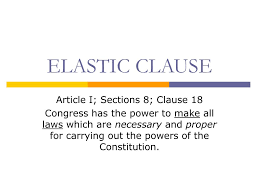

Interpreting the Constitution
* Home
* Stance on Slavery
* Ideal Economy
He belived in loose construction
This means that because of the Elastic Clause, the government has implied powers such as the ablity to create a national bank
